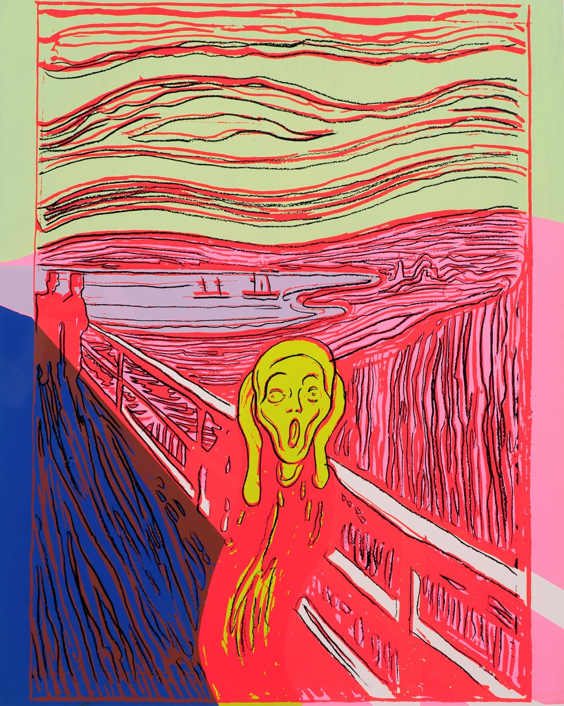

Skrik gjennom tidene
1890-tallet - Edvard Munch og skrik
Munch brukte sterke farger og bølgende linjer til å uttrykke angst i Skrik. Tidlig 1900-tall - Munch inspirerer ekspresjonismen
Måten Munch uttrykte følelser på, inspirerte andre kunstnere. 1961 - Skrik på forsiden av Time
Magasinet Time brukte Skrik på forsiden til en artikkel om angst. 1984 - Andy Warhols versjon av Skrik
Warhol laget silketrykk i sterke farger med utgangspunkt i Munchs litografi. I dag - Skrik i populærkulturen
Vi kjenner igjen det skrikende ansiktet fra Skrik i emojien 😱, som vi bruker til å uttrykke sjokk eller frykt.
Munch brukte sterke farger og bølgende linjer til å uttrykke angst i Skrik. Tidlig 1900-tall - Munch inspirerer ekspresjonismen
Måten Munch uttrykte følelser på, inspirerte andre kunstnere. 1961 - Skrik på forsiden av Time
Magasinet Time brukte Skrik på forsiden til en artikkel om angst. 1984 - Andy Warhols versjon av Skrik
Warhol laget silketrykk i sterke farger med utgangspunkt i Munchs litografi. I dag - Skrik i populærkulturen
Vi kjenner igjen det skrikende ansiktet fra Skrik i emojien 😱, som vi bruker til å uttrykke sjokk eller frykt.

